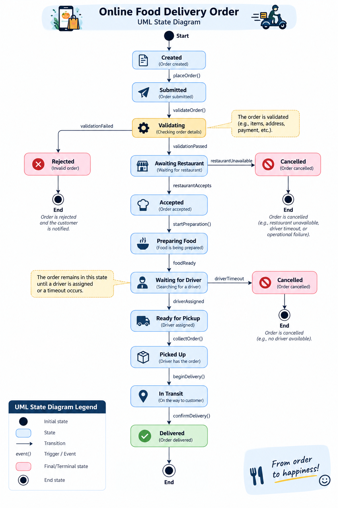
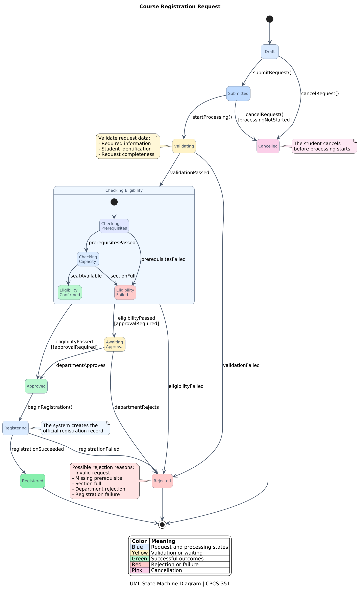
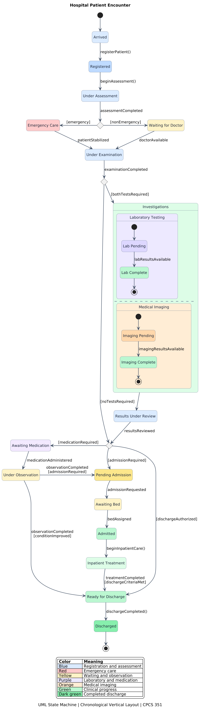

State Machine Case Studies
Three domains, three levels of state-modeling complexity. Read each diagram as the lifecycle of one subject—not as a workflow of people and departments.
Progress from a mostly linear lifecycle, to guarded approval behavior, to a richer patient encounter with nested and concurrent state detail.
Start with states, events and exception exits.
Add guards, eligibility and conditional approval.
Finish with composite/concurrent state behavior.
At every node ask: What is the subject now? On every arrow ask: Which event triggers the transition, and which guard (if any) permits it? A guard alone is not an event.
Online Food Delivery Order
The subject is the Order. Follow its condition from creation through validation, restaurant acceptance, food preparation, driver assignment, pickup, transit and delivery. Rejected and Cancelled are alternative terminal outcomes.

University Course Registration Request
The subject is one Registration Request object. This case adds validation, eligibility, guards, optional departmental approval, cancellation, rejection and successful registration.

- Submit: Draft → Submitted → Validating.
- Check eligibility: prerequisite and capacity checks determine whether the request qualifies.
- Approve or reject: eligible requests may bypass departmental approval or wait for it; invalid requests and failed approvals are rejected.
- Finish: a successful registration reaches Registered; cancellation and rejection end the request by alternative paths.
cancelRequest() is an event; [processingNotStarted] is a guard. Awaiting Approval is a state, not a transition condition.eligibilityPassed and eligibilityFailed events on transitions from the composite eligibility state. These are not automatic completion transitions. For a purely completion-driven model, use an appropriate final/exit-point design.Hospital Patient Encounter
The subject is one Patient Encounter object. Emergency vs normal care changes the route, the illustrated investigations require both laboratory testing and medical imaging in concurrent regions, and treatment decisions lead to observation, admission or discharge.

- Triage: the encounter follows either emergency stabilization or the regular doctor queue.
- Examine: the clinician decides whether investigations are required.
- Investigate: in this example, laboratory and imaging regions progress concurrently; both must finish before the composite state completes.
- Treat: the decision branches toward medication/observation, admission, or discharge preparation.
- Close: all successful paths converge on Discharged and the final state.
What became more sophisticated?
basic lifecycle + exceptions
guards + conditional approval
composite/concurrent state detail
Do not memorize these domains. Learn the progression: identify a subject, name persistent states, label state-changing events, add guards only when needed, and introduce nested/concurrent detail only when it improves understanding.
For each diagram, identify: (1) the modeled object, (2) an event, (3) a guard, (4) a final state, and (5) any composite or concurrent state. Explain why a state machine is different from an Activity Diagram.